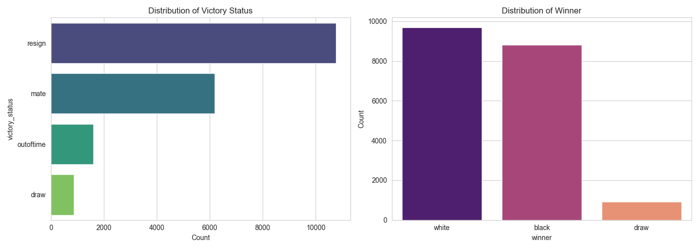
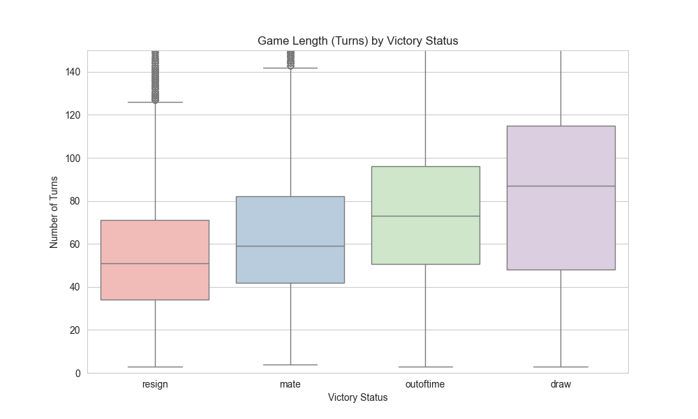

This is a project of data cleaning and analysis of data of +20.000 Lichess chess matches. The objective is to explore common matches patterns and identify variables that may influence in the match outcome.
Technology and Data
Python
Pandas, NumPy
Matplotlib, Plotly
Data is from the Chess Game Dataset (Lichess) on Kaggle.
Data Description
Game ID;
Rated (T/F);
Start Time; End Time;
Number of Turns;
Game Status; Winner;
Time Increment;
White Player ID; White Player Rating;
Black Player ID; Black Player Rating;
All Moves in Standard Chess Notation;
Opening Eco (Standardised Code for any given opening); Opening Name; Opening Ply (Number of moves in the opening phase)
0. Setup and Cleaning Data
The data_cleaning.py script cleaned the original games.csv dataset and saved it as games_clean.csv. The process was quick and easy, given that the data was already very well structured. There were no missing values, and the only necessary changes were cleaning out duplicate data and creating a column for openings without their variants, for simplicity.
1. Descriptive Analysis
The eda.py script generated the insights presented. The following code load the necessary libraries, data and calculates the rating_difference variable.
Code
import pandas as pdimport numpy as npimport seaborn as snsimport matplotlib.pyplot as pltimport plotly.express as px# Load Datadf = pd.read_csv('data/games_clean.csv')# Feature Engineeringdf['rating_difference'] = df['white_rating'] - df['black_rating']
1.1 Summary Statistics
The table below provides a summary of the core numerical features, highlighting the central tendencies and spread of the data.
Ratings: The average rating for both players is high (around 1600), but the range is vast 288 points).
Game Length: The mean game length is 61.06 turns (median 56), showing a slight positive skew (more short games than very long ones).
Rating Difference: The mean difference is 7.79 (White - Black), suggesting White is, on average, the slightly higher-rated player. However, the large standard deviation 246.12 confirms significant rating disparities exist in many individual matchups.
1.2 Feature Correlation
The correlation matrix reveals the linear relationships between the numerical variables.
Player Matching: The strongest correlation is between white_rating and black_rating ($\mathbf{0.64}$), confirming that players are typically matched against opponents of a similar skill level.
Rating vs. Outcome Potential: The rating_difference is strongly correlated with white_rating (0.42) and negatively correlated with black_rating (-0.43). This confirms the engineered feature is highly predictive of the rating skew towards one color.
Turns: Game length has only a weak correlation with ratings (0.12 to 0.15).
2. Game Outcome Analysis
2.1 Winner and Victory Stats Distribution

Winner: White wins the largest share of games, consistent with the first-move advantage in chess.
Victory Status:Resignation is the most common end-game status, followed by Checkmate, suggesting players know they are rarely able to revert a losing position.
2.2 Rating Influence on Outcome
The histogram below shows the distribution of the rating difference, separated by the winner.
The distributions are distinctly separated. The mass of the “white” wins is centered where White had a positive rating advantage, and the mass of the “black” wins is centered where Black had a positive rating advantage (negative rating difference). This visually confirms that the higher-rated player is more likely to win, regardless of color.
2.3 Game Lenght by Victory Status
The box plot illustrates the typical number of turns required for each victory status.

Observations:
Longest Games: Games ending in a Draw tend to be the longest (highest median and upper quartile), as balanced positions require extensive play.
Resignation/Mate: These outcomes occur at a similar median game length, suggesting that decisive mistakes or tactical breakthroughs happen mid-game.
Winning Rates for Top 10 Most Frequent Openings (%)
winner
white
black
draw
opening_name
Scandinavian Defense: Mieses-Kotroc Variation
62.85
34.78
2.37
Italian Game: Two Knights Defense
54.81
41.84
3.35
Scotch Game
53.41
42.42
4.17
Horwitz Defense
51.98
45.54
2.48
Queen's Pawn Game: Mason Attack
50.43
44.35
5.22
French Defense: Knight Variation
50.19
44.53
5.28
Queen's Pawn Game: Chigorin Variation
48.66
47.77
3.57
Sicilian Defense
41.86
53.78
4.36
Sicilian Defense: Bowdler Attack
40.48
55.10
4.42
Van't Kruijs Opening
33.23
62.02
4.75
White’s Best: The Scandinavian Defense: Mieses-Kotroc Variation heavily favors White, who wins 62.85 of the time.
Black’s Best: The Van’t Kruijs Opening heavily favors Black, who wins 62% of the time. This suggests that White’s non-standard opening choice is often punished.
4. Conclusions
The primary factor influencing the game outcome is the rating difference between the players, confirming that the higher-rated participant is statistically favored to win, regardless of playing color. White maintains a slight overall winning edge, supporting the notion of the first-move advantage.
Game endings are predominantly characterized by resignation or checkmate rather than time or draw-related outcomes, indicating a decisive result is achieved in the majority of contests. Furthermore, the analysis of popular openings revealed substantial imbalances, with specific lines, such as the Scandinavian Defense: Mieses-Kotroc Variation and the Van’t Kruijs Opening, showing stark bias toward one color.
Source Code
---title: "An Analysis of Lichess Chess Matches"author: "Ana Luisa Bodevan"date: "11-05-2025"execute: warning: false message: false eval: trueformat: html: code-tools: true code-fold: truetoc: true ---This is a project of data cleaning and analysis of data of +20.000 Lichess chess matches. The objective is to explore common matches patterns and identify variables that may influence in the match outcome.## Technology and Data- Python - Pandas, NumPy - Matplotlib, PlotlyData is from the Chess Game Dataset (Lichess) on [Kaggle](https://www.kaggle.com/datasets/datasnaek/chess/data).### Data Description`Game ID`;`Rated` (T/F);`Start Time`; `End Time`;`Number of Turns`;`Game Status`; `Winner`;`Time Increment`;`White Player ID`; `White Player Rating`;`Black Player ID`; `Black Player Rating`;`All Moves in Standard Chess Notation`;`Opening Eco` (Standardised Code for any given opening); `Opening Name`; `Opening Ply` (Number of moves in the opening phase)## 0. Setup and Cleaning DataThe `data_cleaning.py` script cleaned the original `games.csv` dataset and saved it as `games_clean.csv`. The process was quick and easy, given that the data was already very well structured. There were no missing values, and the only necessary changes were cleaning out duplicate data and creating a column for openings without their variants, for simplicity.## 1. Descriptive AnalysisThe `eda.py` script generated the insights presented. The following code load the necessary libraries, data and calculates the `rating_difference` variable.```{python}#| label: setup#| echo: trueimport pandas as pdimport numpy as npimport seaborn as snsimport matplotlib.pyplot as pltimport plotly.express as px# Load Datadf = pd.read_csv('data/games_clean.csv')# Feature Engineeringdf['rating_difference'] = df['white_rating'] - df['black_rating']```### 1.1 Summary StatisticsThe table below provides a summary of the core numerical features, highlighting the central tendencies and spread of the data.```{python}#| label: descriptive-stats#| tbl-cap: "Summary Statistics of Numerical Features"numerical_cols = ['turns', 'white_rating', 'black_rating', 'opening_ply', 'rating_difference']df[numerical_cols].describe().round(2)```- **Ratings**: The average rating for both players is high (around 1600), but the range is vast **288** points).- **Game Length**: The mean game length is **61.06** turns (median 56), showing a slight positive skew (more short games than very long ones).- **Rating Difference**: The mean difference is **7.79** (White - Black), suggesting White is, on average, the slightly higher-rated player. However, the large standard deviation **246.12** confirms significant rating disparities exist in many individual matchups.### 1.2 Feature CorrelationThe correlation matrix reveals the linear relationships between the numerical variables.{fig-align="center" width="687"}- **Player Matching:** The strongest correlation is between `white_rating` and `black_rating` (\$\\mathbf{0.64}\$), confirming that players are typically matched against opponents of a similar skill level.- **Rating vs. Outcome Potential:** The `rating_difference` is strongly correlated with `white_rating` (0.42) and negatively correlated with `black_rating` (-0.43). This confirms the engineered feature is highly predictive of the rating skew towards one color.- **Turns:** Game length has only a weak correlation with ratings (0.12 to 0.15).## 2. Game Outcome Analysis### 2.1 Winner and Victory Stats Distribution- **Winner:** White wins the largest share of games, consistent with the first-move advantage in chess.- **Victory Status:** **Resignation** is the most common end-game status, followed by **Checkmate**, suggesting players know they are rarely able to revert a losing position.### 2.2 Rating Influence on OutcomeThe histogram below shows the distribution of the rating difference, separated by the winner.{fig-align="center" width="683"}The distributions are distinctly separated. The mass of the "white" wins is centered where White had a positive rating advantage, and the mass of the "black" wins is centered where Black had a positive rating advantage (negative rating difference). This visually confirms that the **higher-rated player is more likely to win**, regardless of color.### 2.3 Game Lenght by Victory StatusThe box plot illustrates the typical number of turns required for each victory status.{fig-align="center" width="798"}**Observations:**- **Longest Games:** Games ending in a **Draw** tend to be the longest (highest median and upper quartile), as balanced positions require extensive play.- **Resignation/Mate:** These outcomes occur at a similar median game length, suggesting that decisive mistakes or tactical breakthroughs happen mid-game.## 3. Opening Analysis### 3.1 Top 10 Openings Winning Rate```{python}#| label: top-10-openings-win-rates-table#| tbl-cap: "Winning Rates for Top 10 Most Frequent Openings (%)"top_openings = df['opening_name'].value_counts().nlargest(10).index.tolist()df_top_openings = df[df['opening_name'].isin(top_openings)]opening_win_counts = df_top_openings.groupby('opening_name')['winner'].value_counts().unstack(fill_value=0)total_games = opening_win_counts.sum(axis=1)opening_win_rates = opening_win_counts.divide(total_games, axis=0) *100opening_win_rates = opening_win_rates.sort_values(by='white', ascending=False)opening_win_rates[['white', 'black', 'draw']].round(2)```- **White's Best:** The **Scandinavian Defense: Mieses-Kotroc Variation** heavily favors White, who wins **62.85** of the time.- **Black's Best:** The **Van't Kruijs Opening** heavily favors Black, who wins **62%** of the time. This suggests that White's non-standard opening choice is often punished.## 4. Conclusions The primary factor influencing the game outcome is the **rating difference** between the players, confirming that the higher-rated participant is statistically favored to win, regardless of playing color. White maintains a slight overall winning edge, supporting the notion of the first-move advantage.Game endings are predominantly characterized by **resignation** or **checkmate** rather than time or draw-related outcomes, indicating a decisive result is achieved in the majority of contests. Furthermore, the analysis of popular openings revealed substantial imbalances, with specific lines, such as the Scandinavian Defense: Mieses-Kotroc Variation and the Van't Kruijs Opening, showing stark bias toward one color.